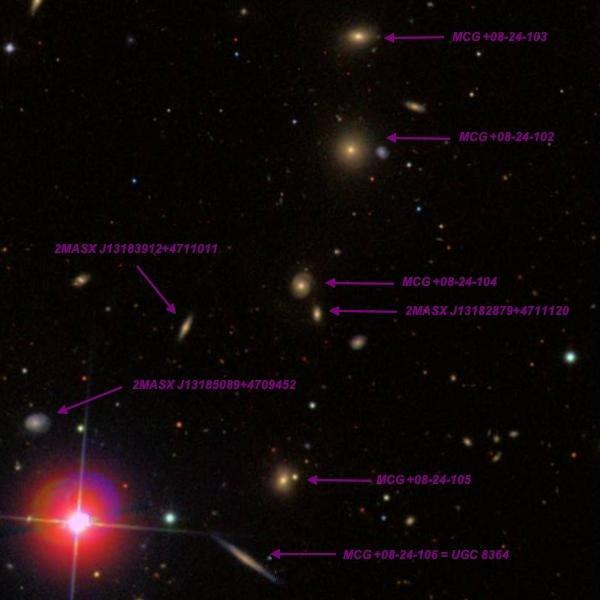
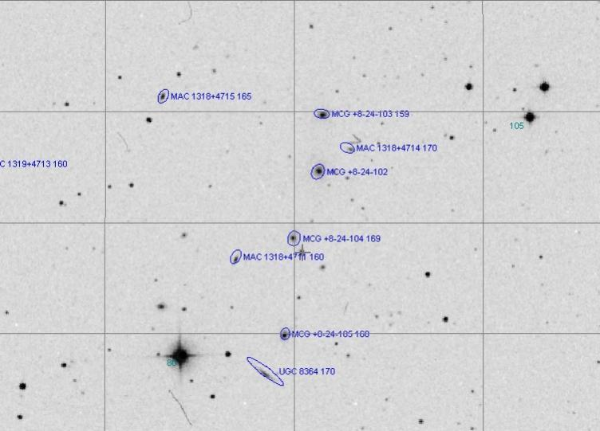

MCG Galaxy Chain near M51
- Name: NED
- Aliases: NSC J131822+471007 = [YSS2008] 264
- Constellation: Canes Venatici
- RA: 13 18 26.1
- Dec: +47 13 23
- Size: 7'
- Mag: 15.3-16.2(V)
- Type: Galaxy Chain
Galaxy chains have appeared several times in the OOTW -- Shakhbazian 166 and HCG 55 in Draco, UGC 3274 in Orion, HCG 56 in Ursa Major. Why? Well, they're unusual objects, fun to try to bust apart, and well worth several visits as better conditions can resolve new members.
This OOTW does not go by any popular name, but you'll find it less than two degrees west of M51! Furthermore, it lies just northwest of a mag 8 star (HD 115809), so it's a snap to find. I think the lack of a popular name has contributed to its obscurity -- though it's similar in difficulty to many Hickson compact groups.
NED gives two designations for the chain -- NSC J131822+471007 and [YSS2008] 264. The first is from the 2003 paper "Northern Sky Optical Cluster Survey" in AJ, 125, 2064. The second is from the 2008 paper "A Spectro-Photometric Search for Galaxy Clusters in SDSS" in Astrophysical Journal Supplement, 176, 414. This study was based on SDSS Digital Release 5.
The chain consists of 5 MCG galaxies - MCG +8-24-102/103/104/105/106, which are oriented nearly N-S and span 7'. The first four have similar redshift (about z = .056), but MCG +8-24-106 = UGC 8364 is a foreground object at half the distance. The SDSS study revealed 7 members (labeled on the image below) within a radius of 1.7 million light years (.52 Mpc).

My first view of this chain was in my 18-inch Starmaster in May 2010. I didn't have a detailed chart or image at the time but picked up 3 of the 5 members in the chain -- MCG +08-24-102, -103 and -105. I'm pretty sure at least 4 in the chain should be visible in this aperture, though UGC 8364 will be a challenge. In April 2011 I took a look through Jimi Lowrey's 48-inch and all 5 members were easily picked up, as well as a few additional members.
18-inch (280x): MCG +08-24-102 appeared very faint, very small, round, 12"-15" diameter. Forms a close pair with MCG +08-24-103 1.5' N. MCG +08-24-103 was featureless, just an extremely faint and small knot, ~10" diameter. MCG +08-24-105 was the faintest member I noticed and appeared again as a featureless dim knot, ~10" diameter, just 2.8' WNW of mag 8.1 HD 115809.
48-inch (488x): MCG +08-24-103 appeared fairly faint, small, slightly elongated E-W, 15"x10", bright core. Similar MCG +08-24-102 lies 1.5' S and also appeared with a fairly faint, small, round, bright core. MCG +08-24-104, 1.9' further SSE, was logged as fairly faint, very small, round, 15" diameter, bright core. Forms a close pair with 2MASX J13182879+4711120, a compact companion 26" SSW. MCG +08-24-105 appeared moderately bright, fairly small, elongated nearly 3:2 N-S, 20"x14". Forms a close "pair" with a mag 17 star just 8" W. Finally, MCG +08-24-106 = UGC 8364 appeared very faint, extremely thin 5:1 SW-NE, 30"x6", very low surface brightness. Situated 1.2' SSE of MCG +08-24-105 and just 2.3' WSW of mag 8.1 HD 115809, which makes viewing more difficult.
2MASX J13182879+4711120 is located just 26" SSW of MCG +08-24-104 and appears very faint, very small, round, 8" diameter, and a stellar nucleus. 2MASX J13183912+4711011, 1.2' ESE of MCG +08-24-104, was very faint, 10"x6" NW-SE. 2MASX J13185089+4709452 (missing from Megastar) is located just 1.4' NNE of the mag 8.1 star. Despite the glare of the bright star, it was easily picked up as a faint, very small, round glow.
I'd be interested in hearing how many of these galaxies can be picked up in various apertures.

"GIVE IT A GO AND LET US KNOW"
GOOD LUCK AND GREAT VIEWING!